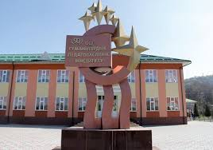

 Ош жогорку колледжи 1999–жылы «Биология» адистигине лицензия алып, «Педагогика» факультетинин курамында 42 студент кабыл алынган. Ал мезгилде «Педагогика» факультети аталып, факультетти п.и.к. доц. С.М.Мадраимов жетектеген. 2001–жылы Ош жогорку колледжинин Окумуштуулар кеңешинин чечими менен 27.4-токтомунун негизинде «Педагогика» факультети «Табият таануу - педагогика» факультети болуп кайрадан аталган. 2003-2004 окуу жылында «Табият таануу - педагогика» факультетинде Математика адистиги ачылып, студенттер кабыл алынган. 2004 – жылы 30-августа ректораттын №70-20.110-буйругунун негизинде факультеттен «Башталгыч билим берүүнүн педагогикасы жана усулу» адистиги бөлүнүп, «Табият таануу-математика» факультети болуп түзүлгөн. Факультетте «биология», «математика», «informatika», «химия» адистиктери даярдалган. Факультеттин максаты: Билим берүүн стандартына ылайык Кыргыз Республикасынын элет жергесиндеги мектептерге терең билимдüü информатика, математика жана билим беруу менеджменти адистиктерин даярдайт, ошондой эле билим беруу тармагындагы проблемаларды изилдөөчү жана окутуунун жаңы технологияларын жайылтуучу компетенттүү жогорку жана орто кадрлар менен камсыз кылат. Азыркы учурдагы факультеттеги кафедралар: Информатика жана жаңы маалыматтар технологиясы кафедрасы Математика жана менеджмент кафедрасы Факультетте даярдалуучу адистиктер: 550200 Физика-математикалык билим берүү багыты «Математика» профили 550200 Физика-математикалык билим беруу багыты «Информатика» профили Окуу мөөнөтү: Күндүзгү окуу бөлүмүндө – 4 жыл, дистанттык технология менен сырттан окуу бөлүмүндө - 5 жыл. Бакалавриатты аяктаганда «БАКАЛАВР» академиялык даражасы ыйгарылат. Факультеттин бардык багыттарына кабыл алуу Жалпы республикалык тестирлөөнүн сертификаты менен жүргүзүлөт